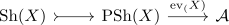

sheaf cohomology for a sheaf on a topological space
Definition
Let $\mathcal{A}$ be an abelian category, $X$ be a topological space, $\mathrm{Sh}(X)$ the category of sheaves Then the sheaf cohomology is defined as right derived functor of

note:
- the inclusion into $\mathrm{PSh}(X)$ is a right adjoint, hence left exact
- limit of functors for a complete domain the evaluation is (left) exact